Introduction to Large Language Models, ChatGPT, and Generative AI
2025-02-01
Hello world!
- Generative AI, is the biggest data-driven hype of the past years.
What is ChatGPT?
- A Large Language model trained on enormous amounts of data:
- Which was instruction tuned
- Which was finetuned with RLHF
- Which resulted in:
- Extremely impressive Chatbot capabilities
- Much better interaction and
- Much better language understanding while also
- Accessible to use for Anybody
What is generative AI
- Generative AI:
“In three words: deep learning worked.”
“In 15 words: deep learning worked, got predictably better with scale, and we dedicated increasing resources to it.”
“That’s really it; humanity discovered an algorithm that could really, truly learn any distribution of data (or really, the underlying “rules” that produce any distribution of data). To a shocking degree of precision, the more compute and data available, the better it gets at helping people solve hard problems. I find that no matter how much time I spend thinking about this, I can never really internalize how consequential it is.”
- Sam Altman, [The Intelligence Age, 23-09-2024]
What is generative AI
- Generative AI:
“
Artificial Intelligence that has learned to create data such as:
images, text, audio, videos, etc…
”
- Text (Large Language Models)
- Images (and Video) (Diffusion Models)
- Audio (Text-to-Speech)
- Tabular Data (Synthetic data)Typically meant in the context of content-creation
This is not new: thispersondoesnotexist.com (2018)
- For more check out ThisXdoesnotexist.com
But became significantly more powerfull, flexible, practical, and “mainstream” around ~2022
What is generative AI - Language Models
- Large Language Models are:
- The State-of-the-Art for generating language
- Famous LLMs are:
- OpenAI: ChatGPT (GPT 3.5), GPT4(o) (proprietary)
- Meta: LLama
- Google: Gemini (Bard) (proprietary)
- Alibaba: Qwen
- Anthropic: Claude (proprietary)
- Mistral: Mistral, Mixtral
- Microsoft: Phi
What is generative AI - Image models
- Diffusion models are the State-of-the-Art for generating images:
- Famous diffusion models are:
- OpenAI: Dall-E (proprietary)
- Midjourney: Midjourney (proprietary)
- Stability-AI: Stable Diffusion
- Famous diffusion models are:
Overview
- A brief history of LLMs
- Capabilities of ChatGPT
Overview
- A brief history of LLMs
- Capabilities of ChatGPT
A brief history of LLMs
Next-word prediction machine
\[P(token_n|token_{n-1}, \cdots, token_1)\]
A token: a single character, a combination of characters, or a word
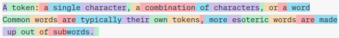Next-word prediction machine
\[P(token_n|token_{n-1}, \cdots, token_1)\]
This is nothing new, your phone does something similair:
Byte-Pair Encoding Tokenizer
- Easy algorithm to compress text into most common elements
- [Flying, Trying, Sky, Cry, Sly] –> “F, L, Y, I, N, G, T, R, K, C, S”
- “F, L, Y, I, N, G, T, R, K, C, S, IN”
- “F, L, Y, I, N, G, T, R, K, C, S, IN, LY”
- “F, L, Y, I, N, G, T, R, K, C, S, IN, LY, RY”
- “F, L, Y, I, N, G, T, R, K, C, S, IN, LY, RY, ING”
- etc…
Byte-Pair Encoding Tokenizer
- Able to:
- encode you whole vocabulary per definition
- Chose precize size you want for your model
- Assign tokens to most important parts of vocabulary
- This does mean that English gets more tokens than Dutch:
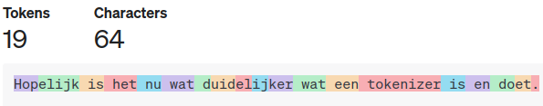
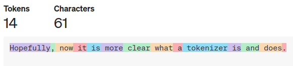
One-hot Encoding
\[ \begin{array}{c@{\hspace{0.3cm}}c@{\hspace{0.3cm}}c@{\hspace{0.3cm}}c@{\hspace{0.3cm}}c} \text{A} & \text{dry} & \text{well!} & \text{Well} & \text{done!} \\ \begin{pmatrix} 1\\ 0\\ 0\\ 0 \end{pmatrix} & \begin{pmatrix} 0\\ 1\\ 0\\ 0 \end{pmatrix} & \begin{pmatrix} 0\\ 0\\ 1\\ 0 \end{pmatrix} & \begin{pmatrix} 0\\ 0\\ 1\\ 0 \end{pmatrix} & \begin{pmatrix} 0\\ 0\\ 0\\ 1 \end{pmatrix} \end{array} \]
- Sparse vector of the vocabulary dimension
- 3 out of 4 numbers are uninformative
- ‘Expensive’ for large corpus of text
- Can we do better?
Word embeddings
\[ \begin{array}{c@{\hspace{0.3cm}}c@{\hspace{0.3cm}}c@{\hspace{0.3cm}}c@{\hspace{0.3cm}}c} \text{A} & \text{dry} & \text{well!} & \text{Well} & \text{done!} \\ \begin{pmatrix} \phantom{-}0.33\\ -0.51\\ \phantom{-}0.83\\ \phantom{-}0.12 \end{pmatrix} & \begin{pmatrix} \phantom{-}0.97\\ -0.15\\ -0.11\\ \phantom{-}0.85 \end{pmatrix} & \begin{pmatrix} \phantom{-}0.94\\ \phantom{-}0.79\\ -0.34\\ \phantom{-}0.35 \end{pmatrix} & \begin{pmatrix} \phantom{-}0.94\\ \phantom{-}0.79\\ -0.34\\ \phantom{-}0.35 \end{pmatrix} & \begin{pmatrix} -0.02\\ \phantom{-}0.69\\ \phantom{-}0.54\\ -0.12 \end{pmatrix} \end{array} \]
- Dense vectors of Dimension N (hyperparameter of model ~ 728)
- Latent embedding 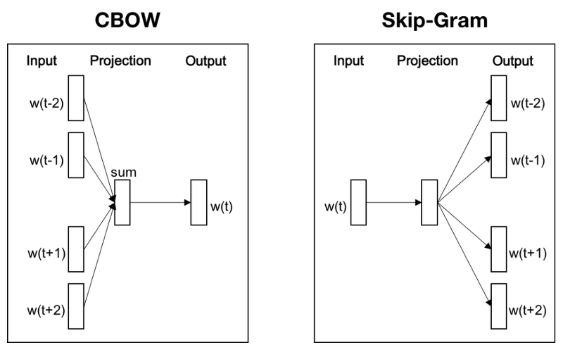
- Meaningfull representation
- Encoded semantic information:
King - Man + Woman =
Queen
- These embeddings marked the start of the new NLP era 1
- Generated using shallow networks to:
- Predict middle word from context
- Predict context from middle word
- Tuning via Backpropegation and gradient descent
- This still has some issues…
Word embeddings
\[ \begin{array}{c@{\hspace{0.3cm}}c@{\hspace{0.3cm}}c@{\hspace{0.3cm}}c@{\hspace{0.3cm}}c} \text{A} & \text{dry} & \text{well!} & \text{Well} & \text{done!} \\ \begin{pmatrix} \phantom{-}0.33\\ -0.51\\ \phantom{-}0.83\\ \phantom{-}0.12 \end{pmatrix} & \begin{pmatrix} \phantom{-}0.97\\ -0.15\\ -0.11\\ \phantom{-}0.85 \end{pmatrix} & \color{red}{\begin{pmatrix} \phantom{-}0.94\\ \phantom{-}0.79\\ -0.34\\ \phantom{-}0.35 \end{pmatrix}} & \color{red}{\begin{pmatrix} \phantom{-}0.94\\ \phantom{-}0.79\\ -0.34\\ \phantom{-}0.35 \end{pmatrix}} & \begin{pmatrix} -0.02\\ \phantom{-}0.69\\ \phantom{-}0.54\\ -0.12 \end{pmatrix} \end{array} \]
- Dense vectors
- Latent embedding
- The numbers are now informative to qualities of the token
- Semanticly-meaningfull:
King - Man + Woman = Queen
- This still causes problems…
Transformer Embeddings
\[ \begin{array}{c@{\hspace{0.3cm}}c@{\hspace{0.3cm}}c@{\hspace{0.3cm}}c@{\hspace{0.3cm}}c} \text{A} & \text{dry} & \text{well!} & \text{Well} & \text{done!} \\ \begin{pmatrix} \phantom{-}0.33\\ -0.51\\ \phantom{-}0.83\\ \phantom{-}0.12 \end{pmatrix} & \begin{pmatrix} \phantom{-}0.97\\ -0.15\\ -0.11\\ \phantom{-}0.75 \end{pmatrix} & \begin{pmatrix} \phantom{-}0.54\\ -0.79\\ -0.34\\ \phantom{-}0.22 \end{pmatrix} & \begin{pmatrix} -0.41\\ \phantom{-}0.79\\ \phantom{-}0.17\\ \phantom{-}0.84 \end{pmatrix} & \begin{pmatrix} -0.02\\ \phantom{-}0.69\\ \phantom{-}0.54\\ -0.12 \end{pmatrix} \end{array} \]
- Word-embedding now depends on context
- Able to encode even more meaningfull information
- Emperically this just works!
- The start of the new age of NLP 1
What does self-attention look like

What does self-attention look like
\[
Attention \sim Query \cdot Key^{T}
\]
- Conceptual Interpretation:
- Query: I have a Noun, I need a Subject!
- Key: I have a Subject here.
What does self-attention look like
\[
\mathrm{Output\ embedding} \sim \mathrm{Softmax}( Query \cdot Key^{T}) Value
\]
- Conceptual Interpretation:
- Query: I have a Noun, I need a Subject!
- Key: I have a Subject here.
- Data-dependent aggregation of information
What does self-attention look like
Are you still following what is happening?
Sampling output tokens
- Output is sampled, and therefore a stochastic variable:
- Running the same prompt twice will give 2 different results \[ P_i = \frac{e^{\frac{y_i}{T}}}{\sum_i^n e^{\frac{y_i}{T}}} = \frac{(e^{y_i})^\frac{1}{T}}{\sum_i^n (e^{y_i})^\frac{1}{T}} \]
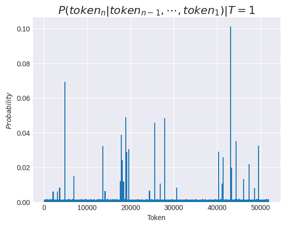
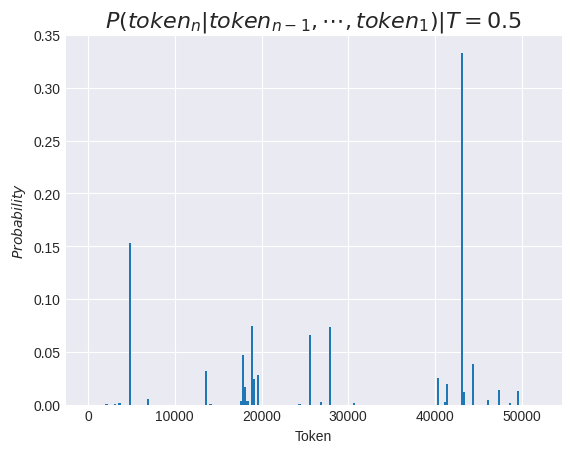
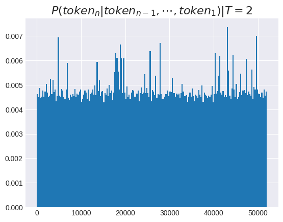
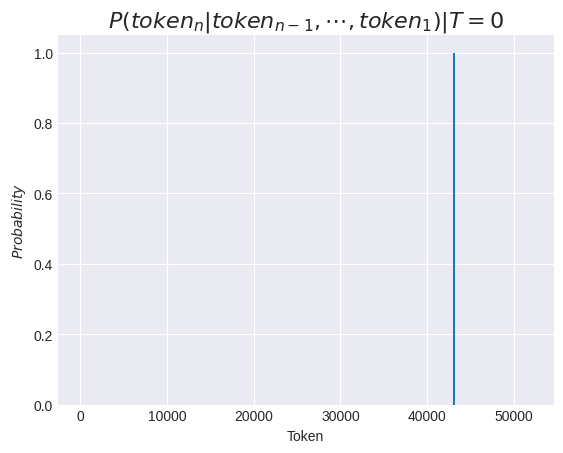
Attention and BERT
- BERT: Pre-training of Deep Bidirectional Transformers for Language Understanding
- Pretraining on massive corpora of text
- Very powerfull contextual embeddings of language
- State-of-the-art on many language tasks with finetuning:
- Sentiment Analysis
- Text Classification
- Named entity recognition
- Question Answering
- Language Modeling
- Bert-base: 110m parameters
- Bert-large: 340m parameters
If we have more compute …
- What if we want to improve our models.
- Companies like OpenAI have more compute available, what should they do?
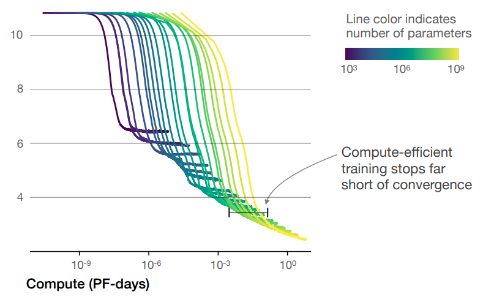 Optimal model size grows smoothly with the loss target and compute \(\mathrm{budget^1}\)
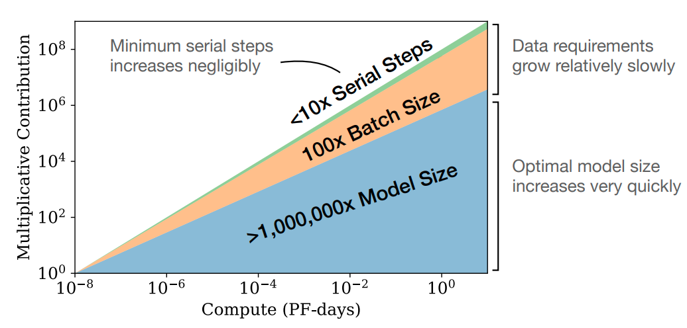 For optimally compute-efficient training, most of the increase should go towards increased model size1
… we puth it towards the model scale
 Models just kept on growing, credit: Julien Simon, Huggingface
Models just kept on growing, credit: Julien Simon, Huggingface
GPT3 IS ChatGPT, almost …
- 2020 - Language Models are Few-Shot Learners
- These models are so good at language modeling (SOTA),
that finetuning is no longer needed to perform NLP task - Very strong 0-shot performance in many NLP task (already in GPT2)
- Can perform In-context learning:
- Given a few examples, learn how to perform task
- No model parameters are adjusted at any point
- Emergent property of LLMs
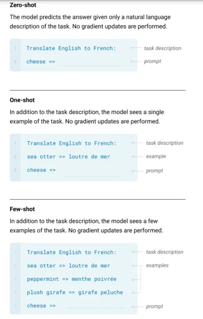
Instruction tuning (finetuning)
- The models just predict likely continuations of text.
- This does not match with the behaviour we seek (alignment)
INPUT:
Explain what a Large Language Model is.
OUTPUT:
Explain what a transformer model is.
Explain what a tokenizer is.
Explain what gradient descent is.INPUT:
Explain what a Large Language Model is.
HUMAN EXAMPLE:
A Large Language Model is a foundational language model with typically billions of parameters. These models have become popular in recent years because of their ease of use combined with impressive performance across the board on NLP-tasksReinforcement Learning From Human Feedback
- Not just showing example completions, but also rating them.
- Apply Reward Modeling and Reinforcement learning to tune the model towards higher quality responses.
- Very difficult to train, but…
- It just works better.
And this gives you…
Overview
- A brief history of LLMs
- Capabilities of ChatGPT
Overview
- A brief history of LLMs
- Capabilities of ChatGPT
Capabilities of ChatGPT
Strenghts of LLMs
Foundational language model that:
- ‘Understands’ language conventions (syntax, grammer, etc.)
- Can answer questions (has knowledge backed into weights)
- Can code
- Can write just like humans
- Can do some basic arithmatic
- Can understand deep elements of writing: sentiment, style, etc.
- Can do logical reasoning (to some extent)
- Capabilities measured on easy scales
Weaknesses of LLMs
- Limited context window (input size)
- It has no memory
- It can only predict next tokens, nothing else:
- It cannot perform tasks while you wait!
- It cannot
thinkin `multiple directions’ like we do! Thinkingonly has a fast mode, no thinking fast and slow.- It doesn’t understand it’s own internal model!
- It doesn’t know what the truth is and what it is not
- It doesn’t understand tabular data well
- It doesn’t proces language in a human way (The Reversal Curse)
Common mistakes
Be Carefull
- LLMs don’t learn continuously! LLMs have a seperate training phase, they need frequent updates for recent events
- LLMs don’t work like our brains! On a conceptual level biological neurons inspired the technique, but in practice they worlds apart in how they function and why
- LLMs don’t search in a database LLMs learn a statistical distribution, and use this to predict the best next token.1
How you should not think of ChatGPT
- We tend to feel empathy for ChatGPT
- People like to say thank you to ChatGPT
- It feels very human to interact with
- BUT: it really boils down to a very very big autocomplete next-word predictor
- WE CAN BREAK THE MODEL LOGIC
Repeated sampling Penalty
- Generative language models have a tendency to repeat themselves:
- Therefore the sampling algorithm receives a repetition penalty
- This can be exploited
Glitch Tokens
- Some tokens identified by BPE only appear in useless context
- Such as /r/counting
- usernames get very high frequency and get their own tokens
ChatGPT3.5 vs GPT4
| Feature/Aspect | GPT-3.5 | GPT-4(o) |
|---|---|---|
| Problem-Solving | Standard problem-solving skills | Greater accuracy and broader knowledge |
| Creativity | Standard | More creative and collaborative |
| Reasoning Capabilities | Standard reasoning | Advanced reasoning capabilities |
| Context Length | 8K tokens context | 32K to 128K tokens context |
| Multimodality | None | - Vision - Speech in - Speech out - Image generation |
| Extra features | None | - RAG - Advanced Data Analysis |
| Factual Accuracy | Standard | more likely to produce factual responses |
| Command Adherence | Standard | More likely to adhere to prompt |
LLMs and ChatGPT